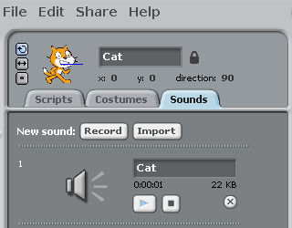

Activity Checklist
- Create a new sprite and make it resemble the sound you will be making.
- In the
soundstab, create a new recording or import a sound.  When the sprite is clicked,
broadcastthe same name as your sprite.when Cat clicked broadcast [cat v]Now we need to play the
soundwhen it receives thebroadcast.when I receive [cat v] play sound [cat v]Finally, make the sprite change in appearance when the
sound.{blockpurple} is played.when I receive [cat v] play sound [cat v] set size to (110) % wait (0.1) secs set size to (100) %